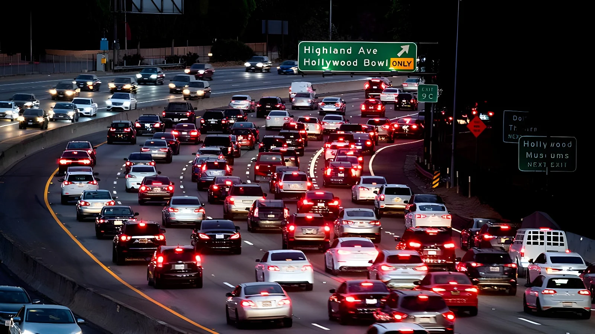

Le 28 septembre 2026, le département des Transports a dévoilé la règle finale « Freedom Means Affordable Cars », qui réécrit d'un seul coup les normes CAFE (Corporate Average Fuel Economy) de dix années-modèles, de 2022 à 2031. La consommation moyenne exigée du parc neuf en 2031 tombe à environ 34,9 miles par gallon (mpg), contre 50,4 mpg projetés par la règle de l'administration Biden. Washington promet des voitures moins chères ; les associations environnementales dénoncent une facture plus lourde à la pompe et annoncent des recours en justice.
Les normes CAFE, créées par l'Energy Policy and Conservation Act de 1975, fixent la consommation moyenne que chaque constructeur doit atteindre sur l'ensemble des voitures et camionnettes qu'il vend. Celles-ci sont fixées par la NHTSA, l'agence fédérale de sécurité routière, rattachée au département des Transports. La règle finale abaisse l'exigence pour les années-modèles 2022 à 2031 : pour les voitures particulières, la norme progresse de 0,90 % par an jusqu'en 2029, puis de 1 % par an jusqu'en 2031 ; pour les SUV et pick-up classés comme camions légers, elle progresse de 0,51 % par an jusqu'en 2029, puis de 1 % par an. La NHTSA estime que l'ensemble correspondra à une moyenne d'environ 34,9 mpg en 2031, contre 30,1 mpg en 2024.
Le texte modifie aussi les règles du jeu. Les échanges de crédits de conformité entre constructeurs sont supprimés pour les crédits acquis à partir de l'année-modèle 2028, ce qui prive notamment Tesla d'une source de revenus : l'entreprise avait indiqué avoir tiré 2,8 milliards de dollars de ces crédits dans le monde l'an dernier, selon Reuters. À partir de 2030, les critères de classement des véhicules changent : de nombreux crossovers et SUV passeront dans la catégorie des voitures particulières, ce qui, selon le DOT, inverse la composition du parc (environ 70 % de camions légers aujourd'hui, environ 70 % de voitures particulières ensuite). Enfin, la NHTSA ne tient plus compte des véhicules électriques pour fixer les normes, conformément à une règle interprétative de juin 2025.
Le département des Transports affirme que la règle réduira le prix moyen d'un véhicule neuf d'environ 1 300 $ et fera économiser 138 milliards de dollars aux Américains sur cinq ans. Il avance aussi qu'en rendant les voitures neuves plus abordables, elle favorisera le renouvellement du parc et sauvera ainsi 1 900 vies tout en évitant plus de 300 000 blessures graves. Jonathan Morrison, administrateur de la NHTSA, résume en substance que les voitures plus récentes sont plus sûres, selon la presse spécialisée.
Ces chiffres sont contestés. D'après les propres estimations du département, relevées par l'Associated Press, les nouvelles normes réduiront le coût des véhicules mais augmenteront la consommation de carburant et les émissions de CO₂ pendant des décennies. À l'étape de la proposition, en décembre 2025, le département chiffrait ce surcroît à environ 100 milliards de gallons de carburant d'ici 2050 et à 185 milliards de dollars de dépenses en carburant, avec des émissions de CO₂ supérieures d'environ 5 %. Le contexte pèse aussi : l'essence coûtait en moyenne 4,47 $ le gallon à l'annonce, contre 3,13 $ un an plus tôt, après le début du conflit avec l'Iran en février 2026.
L'administration Biden finalise les normes CAFE pour 2027-2031, qui conduisent à une moyenne projetée de 50,4 mpg en 2031.
La loi budgétaire « One Big Beautiful Bill » ramène à zéro les amendes CAFE infligées aux constructeurs et supprime le crédit d'impôt de 7 500 $ pour l'achat d'un véhicule électrique, qui prend fin le 30 septembre 2025.
Donald Trump présente à la Maison-Blanche, avec des dirigeants de Ford, General Motors et Stellantis, la proposition de réduire l'objectif 2031 à 34,5 mpg.
L'agence de protection de l'environnement (EPA) signe l'abrogation de l'« endangerment finding » de 2009 et de toutes les normes fédérales d'émissions de gaz à effet de serre des véhicules.
La règle finale est signée, annoncée puis publiée au Federal Register ; l'objectif 2031 est relevé de 34,5 à 34,9 mpg par rapport à la proposition.
« Nous avons enfin mis fin au mandat illégal qui forçait les constructeurs à produire des véhicules électriques plus chers dont les familles américaines ne voulaient pas. »
— Sean Duffy, secrétaire aux Transports, 28 septembre 2026 (traduction)L'Alliance for Automotive Innovation, qui représente les grands constructeurs présents aux États-Unis, a salué un texte qui aligne mieux, selon elle, les normes sur la loi et sur la réalité du marché. Les ONG sont à l'opposé. Le Sierra Club juge que Donald Trump offre aux constructeurs un passe-droit sur la pollution et fait payer la facture aux familles, à la pompe comme sur le plan de la santé. Le Natural Resources Defense Council relève que la nouvelle norme est inférieure à ce que les constructeurs atteignent déjà, alors qu'une norme est censée faire progresser la consommation dans le temps. Le gouverneur de Californie Gavin Newsom a, lui, dénoncé une règle qui oblige les automobilistes à tirer moins de miles de chaque plein, résumée par son slogan « Make America Smoggy Again », « sponsorisé par les pétroliers ».
| Indicateur | Règle Biden (2024) | Règle finale (2026) |
|---|---|---|
| Moyenne du parc en 2031 | 50,4 mpg | ≈ 34,9 mpg |
| Années-modèles visées | 2027-2031 | 2022-2031 |
| Échange de crédits | Maintenu | Supprimé dès 2028 |
| Amendes pour non-respect | Existantes | Nulles depuis juillet 2025 |
« La règle finale d'aujourd'hui est une correction de trajectoire appropriée. »
— John Bozzella, Alliance for Automotive Innovation, 28 septembre 2026 (traduction)Le Sierra Club a promis de combattre la règle et d'autres associations ont indiqué vouloir la contester. Au 1er octobre 2026, nous n'avons trouvé aucun recours déposé. Les États démocrates s'étaient déjà mobilisés contre le projet : en février 2026, une coalition de 21 procureurs généraux, dont celui de la Californie, Rob Bonta, avait adressé à la NHTSA des commentaires hostiles, et dix-neuf procureurs généraux avaient attaqué la règle interprétative de juin 2025 qui exclut les véhicules électriques du calcul des normes.
Avec l'abrogation par l'EPA des normes fédérales de CO₂ des véhicules en février 2026, les normes CAFE étaient l'un des derniers leviers fédéraux sur la consommation des voitures neuves : le démantèlement de la politique climatique américaine se poursuit donc sur la route. L'administration invoque le pouvoir d'achat des ménages et l'emploi industriel ; ses opposants répondent que les économies à l'achat seront annulées par la dépense en carburant, dans un pays où l'essence est chère. La règle entre en vigueur le 30 novembre 2026, quelques semaines après les élections de mi-mandat : son sort dépendra autant des tribunaux que du prochain équilibre politique à Washington.
On September 28, 2026, the Department of Transportation unveiled its final "Freedom Means Affordable Cars" rule, which rewrites Corporate Average Fuel Economy (CAFE) standards for ten model years at once, from 2022 to 2031. The fleet average required of new vehicles in 2031 falls to about 34.9 miles per gallon (mpg), against the 50.4 mpg projected under the Biden administration's rule. Washington promises cheaper cars; environmental groups warn of higher costs at the pump and say they will go to court.
CAFE standards, created by the Energy Policy and Conservation Act of 1975, set the average fuel economy each manufacturer must reach across all the cars and light trucks it sells. They are set by NHTSA, the federal road-safety agency housed within the Department of Transportation. The final rule lowers the bar for model years 2022 through 2031: for passenger cars, the standard rises 0.90% a year through 2029, then 1% a year through 2031; for SUVs and pickups classed as light trucks, it rises 0.51% a year through 2029, then 1% a year. NHTSA estimates the result will correspond to a fleet average of about 34.9 mpg in 2031, up from 30.1 mpg in 2024.
The text also changes the rules of the game. Trading of compliance credits between manufacturers ends for credits earned from model year 2028 onward, which hits Tesla in particular: the company said it earned $2.8 billion worldwide from such credits last year, according to Reuters. From 2030, vehicle classification criteria change: many crossovers and SUVs will move into the passenger-car category, which, according to the DOT, flips the fleet mix (from roughly 70% light trucks today to roughly 70% passenger cars afterward). Finally, NHTSA no longer counts electric vehicles when setting the standards, in line with an interpretive rule issued in June 2025.
The Department of Transportation says the rule will cut the average price of a new vehicle by about $1,300 and save Americans $138 billion over five years. It also argues that by making new cars more affordable, the rule will speed up fleet turnover, saving 1,900 lives and preventing more than 300,000 serious injuries. "Newer cars are safer cars," said NHTSA Administrator Jonathan Morrison, according to trade press.
These figures are disputed. According to the department's own estimates, reported by the Associated Press, the new standards will lower vehicle costs but raise fuel consumption and carbon dioxide emissions for decades. At the proposal stage in December 2025, the department put the extra burden at about 100 billion gallons of fuel through 2050 and $185 billion in additional fuel spending, with CO₂ emissions about 5% higher. Context matters too: gasoline averaged $4.47 a gallon at the announcement, against $3.13 a year earlier, after the conflict with Iran began in February 2026.
The Biden administration finalizes CAFE standards for 2027-2031, leading to a projected 50.4 mpg fleet average in 2031.
The "One Big Beautiful Bill" budget law sets CAFE fines on automakers to zero and ends the $7,500 tax credit for buying an electric vehicle, which expires on September 30, 2025.
Donald Trump presents at the White House, with executives from Ford, General Motors and Stellantis, the proposal to cut the 2031 target to 34.5 mpg.
The Environmental Protection Agency (EPA) signs the repeal of the 2009 "endangerment finding" and of all federal greenhouse-gas emissions standards for vehicles.
The final rule is signed, announced, then published in the Federal Register; the 2031 target is raised from 34.5 to 34.9 mpg compared with the proposal.
"We have finally ended the illegal mandate that forced automakers to produce more expensive electric vehicles that American families didn't want."
— Sean Duffy, Transportation Secretary, September 28, 2026The Alliance for Automotive Innovation, which represents the major automakers operating in the United States, welcomed a text that "better aligns fuel economy standards with the law and current market conditions." Environmental groups take the opposite view. The Sierra Club says Donald Trump is giving automakers "a free pass on pollution" and "handing families the bill, at the pump and with their health." The Natural Resources Defense Council points out that the new standard sits below what automakers already achieve, even though a standard is supposed to improve fuel economy over time. California Governor Gavin Newsom denounced a rule that makes drivers "get fewer miles out of every tank of gas," adding "Make America Smoggy Again."
| Indicator | Biden rule (2024) | Final rule (2026) |
|---|---|---|
| Fleet average in 2031 | 50.4 mpg | ≈ 34.9 mpg |
| Model years covered | 2027-2031 | 2022-2031 |
| Credit trading | Kept | Ended from 2028 |
| Fines for non-compliance | In force | Zero since July 2025 |
"Today's final rule is an appropriate course correction."
— John Bozzella, Alliance for Automotive Innovation, September 28, 2026The Sierra Club has promised to fight the rule and other groups have said they intend to challenge it. As of October 1, 2026, we found no lawsuit filed. Democratic-led states had already mobilized against the plan: in February 2026, a coalition of 21 attorneys general, including California's Rob Bonta, sent NHTSA comments opposing it, and nineteen attorneys general challenged the June 2025 interpretive rule that excludes electric vehicles from the standard-setting calculation.
With the EPA's repeal of federal vehicle CO₂ standards in February 2026, CAFE standards were one of the last federal levers over the fuel economy of new cars: the dismantling of American climate policy is therefore continuing on the road. The administration invokes household purchasing power and industrial jobs; its opponents reply that savings at purchase will be wiped out by fuel spending, in a country where gasoline is expensive. The rule takes effect on November 30, 2026, a few weeks after the midterm elections: its fate will depend as much on the courts as on the next political balance in Washington.